Click in the header to sort the SNe based on this criterion
A small and red square means that there is available spectrum in SDSS
| SDSS ID | SN type | IAU | RA (deg) | DEC (deg) | z | Used in G12 | SDSS IMG |
| 14445 | PhIa | --- | -19.037384 | -0.753997 | 0.23574 | S2 | |
| 15892 | PhIa | --- | -36.801056 | 0.689380 | 0.18299 | --- | 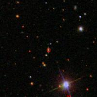 |
| 17784 | SpIa | 2007jg | 52.461662 | 0.056757 | 0.03657 | --- | 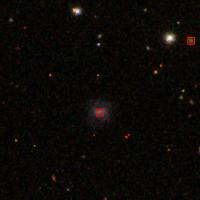 |
| 17880 | SNIa | 2007jd | 44.972271 | 1.160633 | 0.07198 | MLCS | 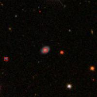 |
| 17884 | SNIa | 2007kt | 27.599800 | 1.171999 | 0.23797 | both | 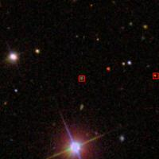 |
| 17886 | SNIa | 2007jh | 54.006268 | 1.103300 | 0.04025 | --- | 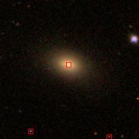 |
| 18109 | SNII | 2007kw | 32.570042 | -0.265970 | 0.06718 | --- | 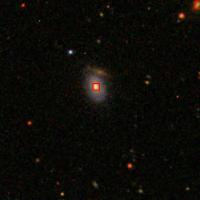 |
| 18297 | SNII | 2007ky | 16.548023 | -0.614241 | 0.07250 | --- | 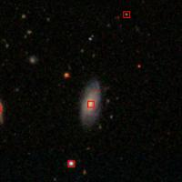 |
| 18299 | SNII | 2007kz | 54.018990 | -0.201276 | 0.12692 | --- | 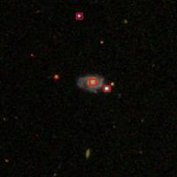 |
| 18321 | SNII | --- | 28.872114 | 1.159273 | 0.10317 | --- | 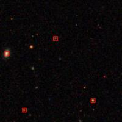 |
| 18408 | SNII | 2007lj | -37.825348 | -0.067404 | 0.04889 | --- | 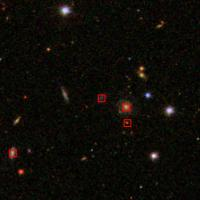 |
| 18441 | SNII | 2007lb | 57.289612 | -0.735955 | 0.03257 | --- | 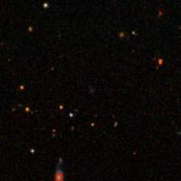 |
| 18457 | SNII | 2007ll | 29.667179 | -0.249128 | 0.08005 | --- | 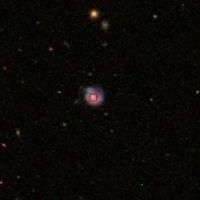 |
| 19658 | SNIa | 2007ot | 8.903108 | -0.232747 | 0.19885 | --- | 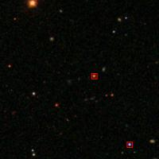 |
| 19775 | SNIa | 2007pc | -41.044006 | 0.651202 | 0.13701 | both | 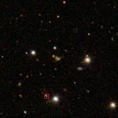 |
| 19849 | --- | --- | 46.479633 | -0.369276 | 0.28116 | --- | 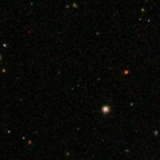 |
| 19940 | SNIa | 2007pa | -44.606506 | -0.268549 | 0.15607 | --- | 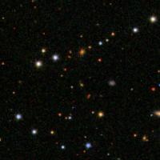 |
| 19953 | SNIa | 2007pf | -27.069550 | 0.579057 | 0.12204 | --- | 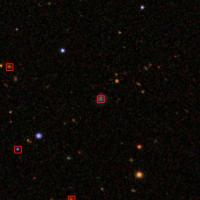 |
| 19969 | SNIa | 2007pt | 31.910402 | -0.324077 | 0.17444 | both | 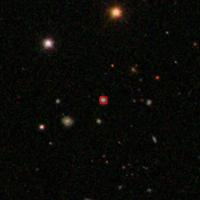 |
| 19992 | SNIa | 2007pb | -2.895935 | -1.185095 | 0.22659 | --- | 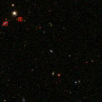 |
| 20084 | SNIa | 2007pd | -12.024872 | -0.578173 | 0.13849 | --- | 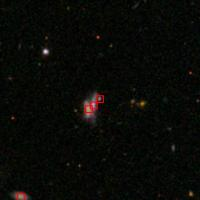 |
| 20208 | SNIa | 2007qd | 32.389839 | -1.000681 | 0.04225 | --- | 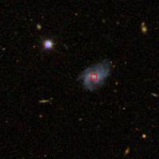 |
| 20350 | SNIa | 2007ph | -47.194244 | -0.955901 | 0.12846 | --- | 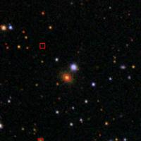 |